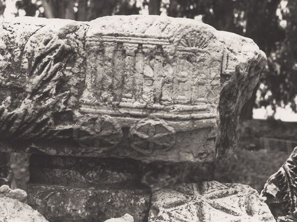

Few documents of the NT appear, at first glance, to be as removed from the world of the modern reader as the Epistle to the Hebrews. Written in an elegantly polished Greek, it makes puns on Greek terms and names, advances an extensive argument about the nature of the sacrifice of Jesus Christ based on an allegorical reading of the fixtures and furniture of the OT tabernacle, and argues for the superior priesthood of Jesus by comparing him to the mysterious figure Melchizedek, who makes but a cameo appearance in the OT. If these exegetical techniques and theological arguments could once be used persuasively to encourage Christians to persevere in their commitment, they could scarcely serve that purpose for most Christian readers today. Most contemporary readers of Hebrews neither speak nor read Greek, nor do they care for rather esoteric OT details, such as what stood behind the second curtain of the tabernacle (9:3–4) or the significance of Abraham’s tithe paid to Melchizedek (7:1–6). But if the rhetorical flourishes and literary style of Hebrews do not generate an empathetic response, its fundamental description of Christian believers as a pilgrim people with a sure guide in Jesus Christ and a definite goal in the heavenly city, in need of faith for the journey they undertake, rings true in every generation where discouragement and distractions threaten such faithfulness.
20.1. THE ORIGINS OF “THE EPISTLE TO THE HEBREWS”
20.1.1. The Genre of the Work
Not only does Hebrews pose peculiar challenges to the modern reader due to its literary style and theological approach, but few questions regarding its origins can be settled with any degree of confidence. Throughout this volume, we have pointed to the genre of a work as an important aid in understanding and interpreting it, but it is not easy to assign a specific genre to Hebrews. It has been called epistle, sermon, and treatise. While Hebrews finds its place among the epistles of the NT canon, it nowhere uses that designation. In fact, it lacks the stereotypical features of Hellenistic letters, including an opening with the identification of sender and receiver, a greeting, and the oft-included wish or prayer for health. It does close with a greeting and benediction, not unlike those of the Pauline letters. And typical of the letters of the NT, the author demonstrates some familiarity with the readers and their situation and wishes to address them specifically with a word of consolation and warning. Thus, while lacking those visible markers that characterize most ancient letters, Hebrews does manifest certain features suggesting that it belongs in that category. By the end of the second century, the document was regularly known as the epistle “To the Hebrews,” as the church fathers Tertullian and Clement of Alexandria and the papyrus manuscript P46 all testify.
Yet other classifications have been suggested as well. The author himself refers to his work as a “word of exhortation” (13:22), which may well designate it as a sermon or homiletic discourse. In Acts, for example, the synagogue officials urge Paul and his companions to deliver a “word of exhortation” to the people (Acts 13:15), at which point Paul begins a homily that includes a lengthy recitation of God’s dealings with Israel, up to and including the sending of Jesus, that is sprinkled with quotations from the OT, and that concludes with an exhortation to respond to this “message of salvation” with faith. Hebrews also mingles all these elements together. Like sermons and homilies found elsewhere in the NT and other sources of the day, Hebrews presents scriptural texts for exposition and as the basis for exhortation and encouragement to the people of God.
Whether properly construed as a letter or as a homily, Hebrews is primarily an exhortation to perseverance in Christian commitment. All its intricate theological and exegetical arguments stand in the service of this admonition to faithful commitment to Christ. The author uses his literary, rhetorical, and theological skills and gifts to hold before his readers a picture of their past, present, and future, the gift of salvation they have been given in Christ, and the hope that is before them, all in order to encourage them to persist in their Christian discipleship. Precisely because of its predominantly pastoral function, it is unlikely that Hebrews should be construed as a theological treatise pure and simple. So long as we keep in mind the pastoral function of Hebrews, it matters little whether we in the end designate it as homily or letter.
20.1.2. The Author of Hebrews
Modern scholars have had a field day offering suggestions regarding the author of Hebrews. It comes to us anonymously, and there are few autobiographical hints or personal references to help us determine who might have written it. The writer places himself outside the circle of the apostles, locating himself in the generation of those who received the message of salvation from those who heard Jesus (2:3). In other words, he was neither an eyewitness of the ministry of Jesus nor one of the first generation of believers.
Because he refers to Timothy (13:23), who is probably to be identified as the Timothy known to us from the Pauline mission, many have sought to place the author within the Pauline circle. Thus suggestions for authorship from early church authors have included Paul, Barnabas, Luke, and Clement of Rome. Later, Apollos, Silvanus/Silas, Priscilla and Aquila, Jude, Epaphras, Timothy, and the deacon Philip were added to the list. Even Mary, the mother of Jesus, has been suggested. Obviously many, if not most, of these suggestions are pure speculation. They do, however, manifest the desire to connect the author with someone who was part of the apostolic circle or with a figure of authority, so as to lend the document a stamp of apostolic approval — an attestation, we might note, that Hebrews itself apparently did not feel compelled to supply. The final verdict on authorship was issued by Origen when he wrote, “God only knows who wrote it.”
But from the document itself we may deduce some features of the author’s profile. The author is clearly well-educated, for not only does he write polished Greek but he has had the benefit of an education that included training in rhetoric and at least some Greek philosophy, as well as in techniques of exegesis of the Scriptures. Almost certainly he was of Jewish descent. At some point he came to faith in Jesus as the Messiah, apparently through the testimony of eyewitnesses to Jesus’ ministry. The reference to Timothy suggests some affiliation with the Pauline mission. And the mere fact that our author addresses this book to a Christian congregation indicates that he is a person in a position of some authority in the church. He issues commands and warnings without pulling his punches, expecting or at least hoping for a positive response. Yet when he urges his readers to submit to their leaders (13:17), it is more difficult to tell whether he includes himself among the leaders. But at the least he hopes that his counsel for his readers to heed their leaders will be followed.
One of the issues that scholars have thought might be settled, or at least addressed, by solving the problem of the authorship of the letter is the question of its setting in ancient Christianity. Does the intricate argument from OT details tell us about the author of Hebrews, its audience, or both? How diverse was the theology of the early Christian movement? What were the primary influences on it? Some scholars who have placed the author or his audience or both in Palestine have tried to establish affinities with the radically eschatological and dualistic conceptual world attested to us in the Dead Sea Scrolls. Taking nearly the opposite position, other scholars have pointed out similarities to figures of Diaspora Judaism, such as Philo of Alexandria, who were strongly influenced by Hellenistic philosophy. But while Hebrews evidences an eschatological framework, it does not fit the apocalyptic mood or model of the scrolls. And while there are similarities with the Greek-speaking Judaism of Philo, with his allegorizing readings of the OT, still the eschatological tone of Hebrews and its lack of consistent philosophically colored readings of the OT show its great distance from Philo. Hebrews testifies not only to the diversity of early Christianity but also to the difficulty in pinpointing a single sort of Judaism that accounts for all the features and theology of Hebrews apart from its messianism.
Although knowing who wrote Hebrews would not immediately solve all these other problems, they are the sorts of issues that are implicated in the question of authorship and audience. Without further external information we cannot settle these issues decisively. Nevertheless, through an analysis of the contents of Hebrews itself, we may venture some suggestions about the relationship of the author and his audience.
20.1.3. The Audience of Hebrews
It is generally assumed that Hebrews is addressed to Christians whose situation is known to the author, at least in its broad outlines. Whereas Paul typically recalls the circumstances that led to the founding of a particular congregation, we have no reason to assume that this author is the founder of the congregation to which he writes. Almost assuredly he is not. What his particular relationship to this congregation might be remains unclear, but he knows enough about their situation, either firsthand or indirectly, to be concerned for their well-being and to assume that he may address them as a pastor.
The situation of the readers of Hebrews can be reconstructed to some extent from comments the author makes in passing. At some point in their past, soon after becoming Christians, they experienced persecution or harassment. The author speaks of “earlier days,” when his readers endured “a hard struggle with sufferings, sometimes publicly exposed to abuse and persecution” (10:32–33). They had not yet, however, experienced martyrdom (12:4). But the mere mention of martyrdom may suggest that the author fears that it is approaching. In the early days after coming to faith, these Christians had demonstrated the strength of their convictions through joyful service to fellow Christians in need, and even endured the loss of property and possessions with equanimity (6:10; 10:34). Now, however, the author speaks of their growth as Christians as stunted (5:11–6:1) and worries that they are in danger of falling back to former ways and perhaps falling away from the Christian faith altogether, perhaps particularly if the threat of martyrdom materializes.
Beyond such information that can be gleaned from the book itself, little can be determined with precision regarding the readers and their social location. That they were Jewish Christians was the assumption of those who first called this document “To the Hebrews.” It is argued that such a designation best fits the whole character of the argument of Hebrews, with the central place given to the OT, the appeals to Jewish ritual and culture, sacrifice, the tabernacle, the wilderness wanderings of Israel, and the covenant with Abraham. The argument for the superiority of Jesus and the new covenant he inaugurates over the old covenant would surely make its greatest impact on those who claimed to be the people of that first covenant. The argument that God is concerned not with angels but with the “descendants of Abraham” (2:16) would have the greatest appeal to a Jewish readership.
On the other hand, it can be countered that Paul, when addressing the Gentiles at Galatia and Corinth, introduces complicated OT arguments in support of his case, that part of early Christian catechism was instruction in basics of the OT, and that more than one work in the NT argues that “descent from Abraham” is now properly assigned to those who are related to him through their faith and obedience to God, not through physical descent (Matt 3:9; Luke 3:8; John 8:37–40; Romans 4; Galatians 4). But whatever merits these counterarguments may have, it is difficult not to see Hebrews as directed toward Jewish Christians, to whom the exhortations and arguments from the exposition of so many OT passages, especially those regarding the wandering Israelites looking for the Promised Land, would have a particularly strong appeal.
Entrance hall of a third- and fourth-century synagogue in Sardis (J. Finegan)
Where these Christians lived is also disputed. Palestine, Ephesus, the Lycus Valley, Corinth, and Rome have all been suggested. The greeting in 13:24, “Those from Italy greet you,” has made Rome a plausible candidate for the location of the readers. This would square with the fact that our earliest extant reference to Hebrews is found in 1 Clement. Moreover, some have suggested that the author’s description of what the readers have endured in the past can easily be made to fit with certain known facts about Rome. For example, some wish to correlate the statement that in the earlier days these Christians had experienced the plunder of their goods (10:34) with Claudius’s decree expelling the Jews (including Christian Jews) from Rome in 49 CE. The prospect of martyrdom and the need for faith and perseverance would be raised by Nero’s persecutions in 64–65. But if these historical situations were in view, why is our author so reticent to mention them more specifically? His words regarding the situation of his readers seem much more vague and unspecified. Although that situation can perhaps be correlated with certain events in Rome, this remains at best a guess.
20.1.4. The Date of the Letter
The hypothesis just mentioned, regarding the possible Roman destination of Hebrews, poses the question of the date of the epistle, for if it were indeed addressed to Christians in Rome prior to Nero’s persecution, then a date somewhere in the early 60s is demanded. Almost as speculative is the argument regarding the dating of Hebrews with respect to the destruction of the temple and the fall of Jerusalem in the year 70. The references in Hebrews to the sacrifices and the work of the High Priest are in the present tense, which has suggested to many that the temple was still standing and that the sacrifices were still being offered when the author wrote. Those who take this position often argue that had the temple been destroyed, that would have been the linchpin in the author’s argument regarding the superiority and enduring nature of the new covenant and the sacrifice that sealed it once for all. Hence, his silence on this matter suggests that the temple is standing and therefore that Hebrews should be dated prior to 70 CE.
Not surprisingly, there are counterarguments. Most notably, the author seems little concerned with the temple and its sacrifices but argues with respect to the tabernacle, precisely because it fit his comparison of the people of the new covenant with the people of the old covenant who wandered in the wilderness. The tabernacle, described in Exodus 25–27, was an elaborate tent constructed of curtains and screens of skins and woven fabrics hung from or over a wooden framework. Thus it could be disassembled and moved. The ark of the covenant was kept behind a curtain (see Heb 6:19; 9:13; 10:20), and there was an altar on which sacrifices were offered (see Heb 7:13; 9:4; 13:10).
The tabernacle symbolized the dwelling of God with his people (Exod 25:8), a function the temple served once the Israelites had settled in the Promised Land. The wilderness generation wandered without coming to its goal, but the generation of the author of Hebrews knows its destination for certain and has a sure guide to lead them there. The wilderness generation had an earthly tabernacle, but Jesus grants entry to a superior tabernacle. This argument would hold whether the temple were standing or had been destroyed. It is often pointed out that Josephus writes of the activities and sacrifices in the temple entirely in the present tense, even though it is clear that Jerusalem had been destroyed two decades earlier.
This overview of the issues of authorship, audience, and date has turned up little more than a host of educated guesses. Little wonder that scholars have sometimes likened Hebrews to Melchizedek himself — “without father, without mother, without genealogy.” No doubt the paucity of specific historical references has lent some support to designating Hebrews as neither a letter or sermon but a “treatise,” a rather general tractate intended for no specific audience and written on no specific occasion. Such a designation might serve, but not at the expense of turning the pastoral admonitions of Hebrews into abstract arguments or theology divorced from their pastoral function. Moreover, even if author and audience cannot be ascertained with certainty, it is clear that the author writes to warn his readers against not only losing heart, but losing faith. The occasion for the letter is the author’s perception that his readers are in danger of either slipping away from their Christian commitment unawares or openly rejecting it. It matters little to him whether it is a Gentile or Jewish past that they slip back into. Either would be abandonment of what God has done for them in Christ. In order to avert such a catastrophe, our author writes this “word of exhortation,” the basic literary and substantive structure of which is provided by numerous appeals to the OT Scriptures, which were, for the author of Hebrews, the lively and active word of the living God.
20.2. USE OF THE OLD TESTAMENT
The use of the OT in Hebrews is rich and varied. There are specific and numerous citations of the OT, countless allusions and passing references to OT persons and events, and arguments and admonitions based on expositions of various passages or on explanations of the significance of certain events. A number of the passages that are quoted figure in important ways elsewhere in the NT, as can be seen in the table on page 474. These texts are expounded under the conviction that they speak of realities and promises that have been brought to fullest expression through the work of God in Christ. The texts of the OT are thus read through an eschatological lens. The opening words of Hebrews make this apparent, when the author writes that “Long ago God spoke to our ancestors in many and various ways by the prophets, but in these last days he has spoken to us by a Son.” It is through the conviction that in Christ the world has entered the era of “these last days” that the author of Hebrews reads and interprets the Scriptures.
Having said that, we must hasten to add that Hebrews does not conceive of Scripture as primarily about a distant past that can only with difficulty be appropriated to the present. Rather, the author assumes that the activity of God as revealed through the OT has direct relevance to readers of every generation. Scripture is not a revelation about the past but a present and living testimony to the work of God, and often the direct speech of God. It has immediate applicability to its readers, although there is both continuity and discontinuity between the periods before and after the coming of Christ. The discontinuity is signaled by the eschatological act of God in Christ. Nevertheless, Hebrews assumes and is predicated on the continuing validity of the OT witness.
| Old Testament Passage | Used In | And Also Significant In |
| Psalm 2: “You are my son, today I have begotten you.” | Heb 1:5; 5:5 | Mark 1:11; Matt 3:17; Luke 3:22; Acts 13:33; 2 Pet 1:17 |
| Psalm 110: “The LORD says to my lord, ‘Sit at my right hand until I make your enemies your footstool.’” | Heb 1:13. Psalm 110 also provides references to Melchizedek, which the author links with the narrative of Genesis 14 | Mark 12:36; Matt 22:44; Acts 2:34 |
| 2 Sam 7:14 contains the promise that God will be a father to the descendants of David. | Heb 1:5 | |
| Jeremiah 31: the promise of a new covenant | Heb 8:10; 9:15, 20; 10:16 | Luke 22:20; 1 Cor 11:25; 2 Cor 3:6 |
| Hab 2:4: “the righteous shall live by faith” | Heb 10:38 | Rom 1:17; Gal 3:11 |
Hebrews contains one of the most famous NT descriptions of “the word of God,” describing it as “living and active, sharper than any two-edged sword, piercing until it divides soul from spirit” (Heb 4:12). To be sure, in context it is difficult to tell whether Hebrews refers here to the spoken or written word of God, but precisely in that ambiguity we find one of Hebrews’ key presuppositions. God speaks through the Scriptures. Hebrews never cites the OT with reference to the author of a particular OT book, nor does it ever introduce its quotations with the formula “it is written.” Scripture is not what human authors wrote; it is what God speaks. Twenty-three quotations of about three dozen in all are said to be spoken by God; four are assigned to Christ (2:12, 13; 10:5–7), and four to the Holy Spirit (3:7; 9:8; 10:15–17). One quotation is even introduced with the almost comic note “Somewhere one has testified” (2:6). That rhetorical device probably does not mean that the author has forgotten the source of the quotation but that it is the testimony itself rather than the human witness that counts.
Earlier we commented on the polished Greek and literary facility demonstrated by our author. That his native tongue was Greek is scarcely to be doubted, and it is therefore little wonder that he quotes the OT in its Greek form. For example, in quoting Ps 8:5, he writes that God has made “the son of man” “a little lower than the angels” (Heb 2:7). This is the reading of the Septuagint, which translates Hebrew elohim as “angels,” an interpretation also found elsewhere in the Septuagint and in the Dead Sea Scrolls. But elohim can also be rendered simply as “God,” and this translation is found in most English versions of Ps 8:5 based on the Hebrew text. Similarly, at Heb 10:5, the author quotes Ps 40:6, where the Septuagint (40:7) includes the phrase “a body you have prepared for me,” which Hebrews takes as a reference to the incarnation of Christ. Unlike the Septuagint, the Hebrew reads “you have given me an open ear.” Sometimes the quotations in Hebrews appear to be altered from both the Septuagint and the Hebrew text, probably in keeping with theological explanations of the author himself, or possibly reflecting variant readings of the OT that were known to the author but have not survived in any manuscripts.
In explaining the OT, the author uses some techniques of interpretation that are rather foreign to modern ways of interpreting the Bible. For example, elaboration of the text, amounting to emendation, can be used as an explanatory technique. Haggai 2:6 reads, “For thus says the LORD of hosts: Once again, in a little while, I will shake the heavens and the earth and the sea and the dry land,” but Heb 12:26 changes it to read: “At that time his voice shook the earth; but now he has promised, ‘Yet once more I will shake not only the earth but also the heaven.’” By omitting “sea and the dry land,” changing the order of earth and heaven, and inserting “not only . . . but also,” the author emphasizes the final “shaking” of heaven.
Hebrews shows a common rabbinic exegetical technique of linking together texts on the basis of shared words to form a “catena” (or “chain”) of prooftexts, such as collections of texts that have in common the words “son” and “angel” (Heb 1:5–12). Texts from Ps 95:7–11 and Gen 2:2 are brought together because they speak of “rest” (Heb 4:3–4). The author of Hebrews also pays close attention to the literal use of OT words. For example, because Psalm 95 uses the word “today” in speaking to those who would read or pray it, the author of Hebrews assumes that it is directly applicable to readers of his own day.
Citations and explanations of texts of Scripture provide not only much of the density of the texture of Hebrews, but a series of texts also serves to provide its overall structure, both literarily and theologically. Through the regular citation, explanation, and illustration of six central texts (see the table on p. 477), the author makes his appeal to his readers to consider the salvation that God has provided in Christ, and to hold fast to their commitment to him. Thus, as we shall see, not only do the citations of scriptural texts provide the structural framework of the discourse, but they also contain in a nutshell a summary of its arguments and admonitions. In these arguments and admonitions, there is a regular alternation between explanations of the significance and superiority of the ministry of Jesus, the Son of God, and the corresponding expectations of those who would be his disciples. This intricate and close correspondence of Hebrews’ understanding of Jesus and its understanding of discipleship is in fact one of the hallmarks of the book. So we will proceed to examine more closely the correspondence between christology and discipleship under the three key christological titles in Hebrews: Jesus as Son, as the “Pioneer” of faith, and as High Priest.
20.3. “IN THESE LAST DAYS, HE HAS SPOKEN TO US THROUGH A SON”
Hebrews opens with a polished preface, what was called an exordium at the time. It is a single sentence in Greek, divided in modern translations into four verses, that encapsulates many of the themes to be developed in the book. Because of its literary beauty and theological density, it is worth quoting here in full:
Long ago God spoke to our ancestors in many and various ways by the prophets, but in these last days he has spoken to us by a Son, whom he appointed heir of all things, through whom he also created the worlds. He is the reflection of God’s glory and the exact imprint of God’s very being, and he sustains all things by his powerful word. When he had made purification for sins, he sat down at the right hand of the Majesty on high, having become as much superior to angels as the name he has inherited is more excellent than theirs. (NRSV)
The eschatological perspective of Hebrews is underscored by the contrast between long ago and these last days, literally “at the end of these days,” a phrase reminiscent of other NT designations such as “the last hour” (1 John 2:18), “the end of the ages” (1 Pet 1:20), and “the ends of the ages” (1 Cor 10:11). The conviction that the eschatological hour has struck underlies the argument of Hebrews for the superiority of the Son, who is contrasted with the prophets, through whom God did indeed speak “long ago.” Not only is the Son the medium of God’s speaking, but he is also the agent through whom God “created the worlds.” Here Hebrews presents a motif common in the NT and developed from the wisdom speculation of the OT and texts of Second Temple Judaism that it was through the agency of the Son, God’s personified and embodied wisdom, that the world was created (e.g., John 1:1; 1 Cor 8:16; Col 1:16). This affirmation signals the Son’s preexistence and, through his participation in both the creation and the sustenance of life, his very divine identity with God. He is, in fact, “the reflection of God’s glory and the exact imprint of God’s very being,” a description that reflects the Hellenistic Jewish book of Wisdom, where wisdom is described as “a breath of the power of God and a pure emanation of the glory of the Almighty . . . a reflection of eternal light, a spotless mirror of the working of God, and an image of his goodness” (Wis 7:25–26). But even more, through this Son “purification for sins” was made. Because of his faithfulness, he is now exalted to the position of greatest honor, designated by the phrase “the right hand of God.” Here, in a nutshell, is the christology of Hebrews: the preexistent Son of God is the agent of God’s creation and revelation, as well as the one through whom the world is held together; in his human life he made purification for sins; and now he assumes a position of honor and authority. God gives life in all its forms through him; therefore, he is the “heir of all things.” As the “heir,” Jesus is the one who receives God’s promises on behalf of and for human beings.
As Son, Jesus stands in contrast to the prophets (1:1–4), to angels (1:5–14), and to Moses (3:2). All these figures were agents of God’s revelation to human beings, and Hebrews accepts the validity and importance of God’s speaking through them, while stressing the surpassing greatness of the revelation through the Son. A puzzling feature for some of the book of Hebrews is its lengthy comparison of the Son with angels, designed to demonstrate the superiority of the Son.
The Son has a more excellent name (1:4) than do angels. That name is not specified, although it may be simply the designation “Son” that the author has in view (1:5). In any case, it is not simply the superiority of the name itself, but the superior dignity and worth of the one for whom the name stands that the author has in view. The author argues that the angels are ministering servants (1:7, 14) rather than those who are to be served, whereas the Son is to be worshiped by angels (1:6) and is in fact the agent of God’s rule (1:8, 14). The Son, moreover, is eternal (1:8; 10–12). What has generated the author’s insistence on the superiority of the Son to angels?
One theory is that the Christians to whom this word of exhortation was addressed were actually tempted to exalt angels above their status, and perhaps even to worship them. In the book of Revelation, for example, the seer John twice falls at the interpreting angel’s feet and is cautioned to worship God alone (19:10; 22:9). In Colossians, Paul alludes cryptically to “the worship of angels.” Such NT references, along with this data from Hebrews, have led some interpreters to suggest that the worship of angels was not unknown in early Judaism and Christianity. This might suggest that the Christians referred to in Hebrews were in danger of compromising their devotion to the “living God” with worship of other beings. But others have suggested that what Jews and Christians sought was participation in the angelic worship of God in heaven, such as is depicted in Revelation 4–5. Hence, the caution against “worship of angels” is a warning against seeking certain sorts of ecstatic religious experiences too zealously for their own sake.
A final suggestion, perhaps more probable in light of the development of traditions about angels and heavenly figures in the first century, including archangels, the Son of man, and various other heavenly beings, is that it was easy to think of Jesus as an angel, perhaps the chief of all angels. In fact, Melchizedek, to whom Jesus is later compared in this book, is thought by some scholars to be equated with the archangel Michael in texts from the Dead Sea Scrolls (especially 11Q Melchizedek). There are traditions of first-century Judaism that developed the statements in Exod 23:21 regarding the angel of the presence. God warns the people of Israel to listen to his angel: “Give heed to him and hearken to his voice, do not rebel against him, for he will not pardon your transgression; for my name is in him.” One speculative apocalyptic text, 3 Enoch 12:15, speaks of the angel Metatron as “the lesser YHWH,” applying the statement of Exodus 23 regarding God’s name quite literally, but retaining some contrast with God with the comparative term “lesser.” The stress in Hebrews on the excellence of the name of the Son Jesus may have in view a contrast with the angel thought to bear the name of God. Philo speaks of the Logos as an angel. Justin Martyr, a second-century Christian author, calls Jesus an angel and speaks of the OT appearances of the “angel of the Lord” as the appearances of the Logos of God. But the author of Hebrews categorically denies the identification of Jesus as an angel. Jesus is no angel; he is the Son whom the angels serve.
Such is the rich and speculative world of Judaism and early Christianity that may lie behind Hebrews’ desire to set the Son above the angels. But the author adduces yet one more function of angels: they were the mediators of the covenant of Sinai, the law. The belief that the law was given through angels appears also in Gal 3:19. That law, according to the author of Hebrews, was valid, and disobedience to it was punished (2:2). But Jesus proclaims a greater salvation, and that message of salvation through the Son is what the author heard from the followers of Jesus and what he now reminds his readers of. The law given through angels was valid, but the message of salvation given through the Son is of surpassing value and worth. Therefore, “how shall we escape if we neglect such a great salvation?” (2:3), the author admonishes his readers. God’s supreme act of salvation has been accomplished “in these last days” through his Son, not through any angel.
But this Son, through whom the world was made, who is worshiped by angels, and who bears a name more excellent than that of any angel, became “a little lower than the angels” for a period of time, “in order that he might taste death for everyone.” Hebrews shares the incarnational christology of other authors of the NT, laying particular emphasis on the real but temporary subjection of the Son to the angels, which enabled him to suffer and die for humankind. The course of his life also distinguishes the Son from the angels, for in his full participation in human life he also becomes like those on whose behalf he suffered and died. In this stress on Jesus’ identification with human beings we find one of Hebrews’ most characteristic emphases: Jesus is both like and yet also unlike the children of God, whose humanity he shares. Both his likeness and his difference enable him to become the one who brings “many children to glory,” as the “pioneer of their salvation” (2:10).
20.4. JESUS, THE PIONEER AND PERFECTER OF FAITH
Hebrews uses a number of distinctive terms to speak of Jesus’ saving work as opening a path to God or of Jesus serving as a guide who charts the way for others to follow. The first such term, archēgos (2:10; 12:2), is variously rendered in modern English translations as “pioneer” (RSV, NRSV), “author” (NIV), or “captain” (KJV; these versions use “author,” “leader,” or “prince” for the same word in Acts 3:15; 5:31). Jesus’ role as “pioneer of faith” has two aspects: First, Jesus is like his brothers and sisters (2:11–12), sharing “flesh and blood,” (2:14) — “like his brothers and sisters in every respect” (2:17). Not only does Hebrews assume and stress the true humanity of Jesus, but it is one of the few NT books that make his humanity theologically important. Jesus’ role as “pioneer” is exercised from within the humanity he shares with his brothers and sisters. He is not ashamed to stand with “the descendants of Abraham,” to call them “brothers and sisters,” and to represent them before God on their behalf.
But, second, as pioneer of faith, Jesus has gone on ahead of his brothers and sisters to glory (2:10) by dying to destroy the power of death and so bring freedom to all who were enslaved to death (2:14–15). The implication is clear: Jesus has blazed a trail that his brothers and sisters are to follow. Because he has endured suffering, died, and been exalted to a position of honor, the pathway is open for others to follow to life in glory with God. In other words, Jesus has done what his brothers and sisters could not do for themselves. Although he has exercised this role from within the common humanity shared with them, the very fact that his life and death liberate his brothers and sisters from the power of death and bring them to God characterizes the unique role that his life and death have. As we shall see, this aspect of Jesus’ life and work are particularly summarized under the title “high priest.”
Other terms in Hebrews also stress Jesus’ role as inaugurating God’s great salvation. He is the “source of salvation” (aitios, 5:9). Using athletic imagery, Hebrews speaks of Jesus as a “forerunner” (prodromos, 6:20) who has entered into the true inner sanctuary ahead of his brothers and sisters and on their behalf. Finally, Jesus is pictured as “the great Shepherd of the sheep” (13:20; cf. 1 Pet 2:25; John 10:1–18). The combined point of these images is to underscore not only the distinctive role of Jesus in bringing God’s eschatological salvation, but also his role of bringing human beings to God. Thus while Hebrews stresses the final climactic act of salvation, which God effects through the Son, this act does not simply end God’s work but rather opens up a path to the future. The “last hour” thus initiates a whole new era, and into this era Jesus serves as leader, pioneer, forerunner, and shepherd. Those who would be his disciples are therefore depicted not only as the beneficiaries of what he has done but also as pilgrims who must follow attentively and intentionally the path he has charted.
In his description of the pilgrim people of God, the author of Hebrews compares and contrasts Jesus’ disciples to the children of Israel who wandered in the wilderness. They, too, had a guide, but Hebrews draws on biblical texts to portray them as rebellious (3:16), unbelieving (3:12, 19), disobedient (4:6, 11), and hard of heart (3:13, 15; 4:10). Therefore, they did not attain the goals they sought. They were unable to enter the Promised Land and cease from their wanderings. In other words, they did not attain rest (3:11; 4:3). Because Jesus’ disciples have such a superior leader, the stakes are higher, and those who would follow him must be careful not to duplicate the disobedience and sins of the wilderness generation but to persist in the pilgrimage to enter God’s promised rest.
20.5. THE PILGRIM PEOPLE OF GOD
The description of God’s people as a “pilgrim people of God” aptly suits both the Israelites who, following Moses and then Joshua, wandered in the wilderness until they reached the Promised Land, as well as Christians who, following Jesus, have as their goal and hope a heavenly country prepared for them by God (11:15). The generation of Israelites that left Egypt and followed Moses was not permitted to enter the Promised Land. A subsequent generation under the leadership of Joshua was permitted to go in, but Hebrews takes its point of departure from the generation that failed to attain what it sought because of its disobedience. Specifically, our author turns to the Psalms to discover an account of their disobedience and God’s judgment as a warning to his own readers.
The argument from Psalm 95, the second of the six primary texts that form the literary and theological framework of Hebrews, draws primarily from the portion of the psalm that recounts God’s judgment on the disobedience of the people. But our author makes much of one word in the Psalm. It addresses its readers with the admonition, “Today if you hear his voice, do not harden your hearts as in the rebellion” (Heb 3:15, 4:7). Since our author assumes that the Psalm was written by David and, hence, written long after the actual wilderness wanderings (4:6–7, 8), he concludes that the “rest” of which God speaks still remained when Psalm 95 was composed. In other words, it was still “today” when the psalm was written, and it is still “today” for his Christian readers (3:13–15). Those who will enter God’s rest are those who remain faithful to Jesus their leader and so become “partners of Christ, if only we hold our first confidence firm to the end” (3:6, 14).
Neither Moses nor Joshua is denigrated, but Jesus is nevertheless shown to be superior to both. Moses, indeed, is called “faithful in all God’s house” (3:2; cf. Num 12:7); but his role was that of servant (3:5), whereas Christ is the son of the house. The contrast between a servant or slave in the house and the one who is the son and heir is also found in John 8:34–36 and Galatians 4. In Heb 4:8, Jesus is contrasted with Joshua, whose name in Greek would also be Iēsous, or Jesus. Joshua was unable to give the Israelites rest (4:8) but those who have believed in Jesus have entered that rest (4:1–3) and now must maintain their confidence. Although the author uses numerous exhortations to “hold fast” and “stand firm,” the picture of discipleship that he paints is anything but static. The life of the disciple is portrayed not as standing still and holding tight but as adventuresome journeying with Jesus, the “trailblazer of faith.”
And indeed faith is the appropriate and necessary commitment for the pilgrim people of God. Hab 2:4 is the key passage in this regard, and the key chapter in Hebrews is ch. 11, the catalog of heroes of the faith. Paul cites Hab 2:4 twice (Rom 1:17; Gal 3:11) to establish that God’s righteousness is received through trust or faith, not through obedience to the law. But the author of Hebrews cites it for a different reason. His version of Hab 2:3–4 — “In a very little while, the one who is coming will come and will not delay; but my righteous one will live by faith. My soul takes no pleasure in anyone who shrinks back” — is somewhat closer to the Septuagint than to the Hebrew text. What he is most interested in is the contrast between “living by faith” and “shrinking back,” which suggests that in Hebrews the Greek word pistis is best understood as “faithfulness.” Hebrews has in view a solid and firm commitment that induces one to press on rather than to “shrink back,” in order to attain those things and that world that are not yet seen (11:1–3).
From the citation of Habbakuk, the author then turns to a long list of examples of faith. Beginning with Abel, the second son of Adam, the survey includes many worthies such as Noah, Abraham, Isaac, Moses, Gideon, David, Samuel, and others who in faith looked forward to receiving what was promised to them. But — and this is one of the chief reasons for which they are all mentioned — they all died before receiving what had been promised to them, namely, the heavenly country that God has prepared for them. In other words, they lived in faith, not receiving the promises, which God has yet to fulfill. Therefore, Hebrews exhorts its readers, who are “surrounded by so great a cloud of witnesses,” to “run with perseverance the race that is set before us, looking to Jesus the pioneer and perfecter of our faith” (12:1). Through this exhortation the author points to both continuity and discontinuity between the Israelites and disciples of Jesus. Like faithful women and men in Israel’s past, Christians are to “run the race” before them with perseverance. The great difference, however, is that Jesus is both the pioneer and perfecter of faith. That is, he can and will bring the wandering saints of God to their goal or destiny.
This idea of perfection must not be misunderstood. The verbal form is used nine times, three times of the Son who is made perfect or is perfected (2:10; 5:9; 7:28), three times of the law, which cannot make perfect (7:19, 9:9, 11), and three times of the saints of God who are made perfect (10:14; 11:40; 12:23). So the idea is primarily of a process, of being made complete, whole, fit, or adequate to a task or for a particular end. It is clear that moral perfection is not in view since Christ, who is said to be without sin, can also be spoken of as being made perfect through suffering (2:10, 5:9) to serve as High Priest for those who are likewise suffering. Similarly, Hebrews does not say that the law is imperfect, but that it cannot make perfect: it could not bring all the saints of old to their promised rest, to the better country, to the heavenly city which they sought (11:10; 13:14). It cannot make those under it complete or whole. The gifts and sacrifices offered up in accordance with the injunctions of the law cannot “perfect the conscience” (9:9). But through Christ, the great High Priest, a sacrifice is offered that can so purify and hence perfect the conscience (9:11–14). This argument regarding the superior high priesthood of Christ is distinct to Hebrews and baffling to modern readers, for whom the rituals of sacrifice, the details of the tabernacle, and the furnishing of the altar carry little emotional appeal or theological persuasiveness. Yet in spite of the initial strangeness of the argument, it contains one of the clearest and strongest statements in the NT of Jesus’ humanity as essential for winning salvation for humankind.
20.6. “SUCH A GREAT HIGH PRIEST”
The first reference to Jesus as “high priest” occurs at Heb 2:17, and the image subsequently occupies much of the book’s christology. How the term came to be applied to Jesus has been the source of some speculation. Hebrews obviously knows the problem of speaking of Jesus as a priest since he did not come from the priestly line, the tribe of Levi (7:14). Therefore, he refers to Jesus’ priesthood as belonging to the “order of Melchizedek.” Nevertheless, precisely because the OT says so little about Melchizedek’s exercise of his priestly office, most of the features of Jesus’ priesthood are drawn from the functions of the High Priest as one who intercedes on behalf of the people for forgiveness of sins before God, and particularly so on the annual Day of Atonement.
Two adjectives, found in conjunction with the first reference to Jesus as High Priest, characterize his work in this regard: he is merciful and faithful. Indeed, as we have already seen, faithfulness is to be the hallmark of the pilgrim people of God, and in this regard Jesus both serves as an example of faithful obedience to God and may also be trusted to exercise his office of priest faithfully. He can be trusted. He is faithful over God’s house. That is, he has faithfully exercised the rule entrusted to him (3:6). Indeed, he has been tested and found faithful (2:18; 4:15; 5:8–10), so that one of the noteworthy descriptions of him is that he “in every respect has been tested as we are, yet without sin” (4:15). In other words, he has passed the test. He does not need to offer sacrifice for his own sins (7:26–27; 9:6), as does the High Priest of the Levitical system, since he is without sin. In this regard, as High Priest Jesus is not like his brothers and sisters.
Yet in exercising his high-priestly office he demonstrates also that he is merciful, a theme that is reiterated in other ways throughout Hebrews. He has suffered and so can help those who are tested (2:18). He is able to sympathize with human weakness (4:15). From him one may receive mercy and grace in time of need (4:16). He suffered (5:8) and endured hostility (13:3). He lived the life that his brothers and sisters lived. His suffering and experience of human weakness makes him a High Priest who can sympathize with humankind and intercede faithfully on their behalf. Thus his likeness to human beings is also particularly stressed as a feature that makes him a merciful and “perfect” High Priest.
The extensive description of Jesus’ priesthood according to the “order of Melchizedek” (ch. 7) is based on Psalm 110, the third of the six OT texts listed above as key texts for Hebrews. It is argued from the psalm that this priesthood is superior to that of the Levitical order because, since Abraham paid tithes to Melchizedek, all Abraham’s descendants, including the Levitical priests, did so as well, because, and this is closer to the real point, the Levitical priesthood could not bring people to perfection (7:11), and because the priesthood of Melchizedek is indestructible (7:16), exercised forever (7:17, 21), and held permanently (7:24). Therefore, Jesus is able “for all time” to make intercession on behalf of the saints. He offered one sacrifice for all time, accomplishing his work “once for all” (Greek hapax, 9:26, 28; 10:10, 14). His sacrifice is superior because it does not have to be offered repeatedly. Therefore, his is a better priesthood.
The description of Jesus’ work as “better” or some aspect of his ministry as “better” or as inaugurating that which is “better” is found in Hebrews thirteen times. The description of Jesus’ work and ministry as “better” belongs within the eschatological framework of Hebrews. Because it is the “last days,” the time of God’s climactic fulfillment of promised salvation, that salvation and all that comes with it are necessarily better. The fifth key OT text is drawn from Jeremiah 31 and speaks of God renewing his covenant with his people and underlies the argument that what God has given in Christ is “better” than all that has been given before.
As we saw earlier, the Son is better than angels (1:4). Christians have a better hope (7:19), a better covenant (7:22), better promises (8:6), and better sacrifices (9:23) because of Christ’s superior priesthood. Likewise, they are heading for a better possession, a better country, that is, a heavenly destination rather than an earthly country (10:34; 11:16). What Christians have is better than what came before, but what they do not see is better than what they already have. Christ is the better High Priest, because he is sinless (4:15) and eternal (7:3, 16, 23–25) and belongs to a priesthood of a better order and offers a superior sacrifice (7:27; 9:13) to seal a superior covenant (8:6–13) in a superior sanctuary (9:11).
The contrast between that superior sanctuary and the earthly tabernacle made with human hands (9:1, 24) takes up a good part of chs. 8–9. Christ did not enter into an earthly tabernacle but into heaven itself (9:24). The earthly tabernacle is the rather elaborate tent that the Israelites were commanded to make (Exodus 25–27) as a symbol of the dwelling or presence of God among them. Hebrews makes the point that that tabernacle was a copy of the true heavenly sanctuary (8:5). This at once validates the reality of God’s presence with the Israelites, as depicted by the Mosaic tabernacle, but it also shows that the tabernacle did not represent the fullness of God’s presence. For the heavenly tabernacle is neither made with hands, nor does it belong to this age (9:9, 11, 24); in fact, it is not a tent at all. Through Jesus’ ministry, believers may enter the heavenly sanctuary, Mount Zion, the heavenly city, and so into the fullness of God’s presence (12:22).

Relief depiction of the Tabernacle and the Ark of the Covenant from the third- and fourth-century synagogue at Capernaum (Israel Department of Antiquities and Museums)
To be sure, these arguments regarding the superiority of Christ, his sacrifices, the heavenly tabernacle, his priesthood, and so on are statements of the author’s deepest convictions about Christ and are not susceptible of proof in the ordinary sense. But through these arguments the author lays bare his strongest convictions regarding God’s salvation in Christ. God cannot do more than he has done through Jesus his Son. Therefore, Christians are not to lose heart in the midst of their trials and tribulations, but are to persevere on their journey, “looking to Jesus, the pioneer and perfecter of faith.”
Harold W. Attridge, A Commentary on the Epistle to the Hebrews (Hermeneia; Philadelphia: Fortress, 1989)
F. F. Bruce, The Epistle to the Hebrews (revised ed., New International Commentary on the New Testament; Grand Rapids: Eerdmans, 1990)
George W. Buchanan, To the Hebrews (Anchor Bible; Garden City: Doubleday, 1972)
David A. DeSilva, Perseverance in Gratitude: A Socio-Rhetorical Commentary on the Epistle “to the Hebrews” (Grand Rapids: Eerdmans, 2000)
Paul Ellingworth, Commentary on Hebrews (New International Greek Testament Commentary; Grand Rapids: Eerdmans, 1993)
William L. Lane, Hebrews, 2 vols. (Word Biblical Commentary; Dallas: Word, 1991)
Barnabas Lindars, The Theology of the Letter to the Hebrews (Cambridge: Cambridge University Press, 1991)